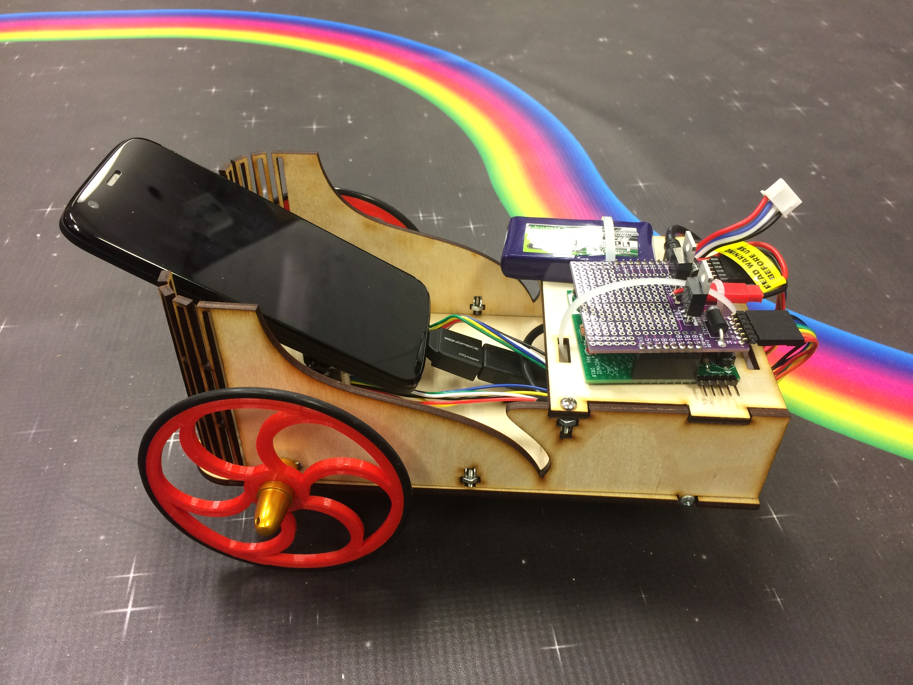
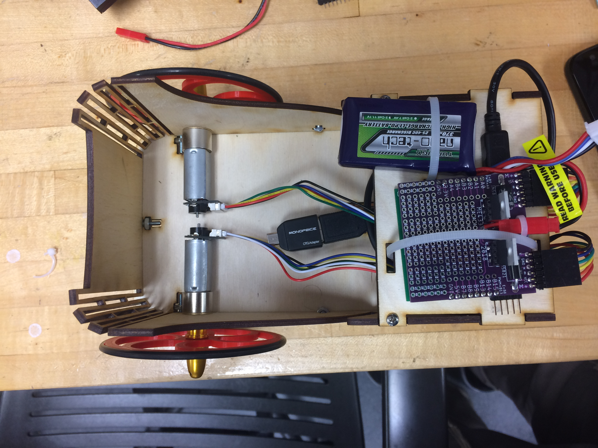
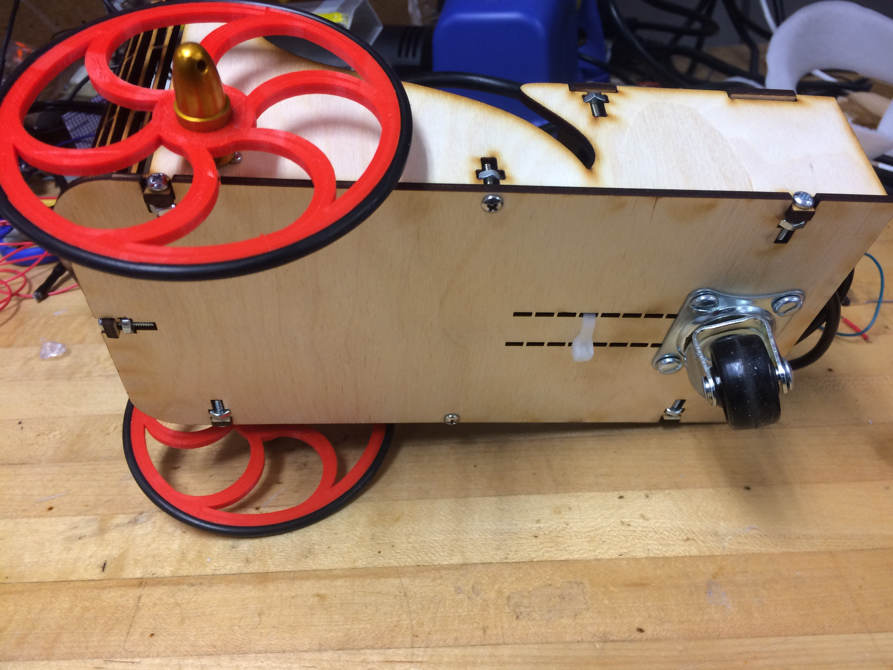
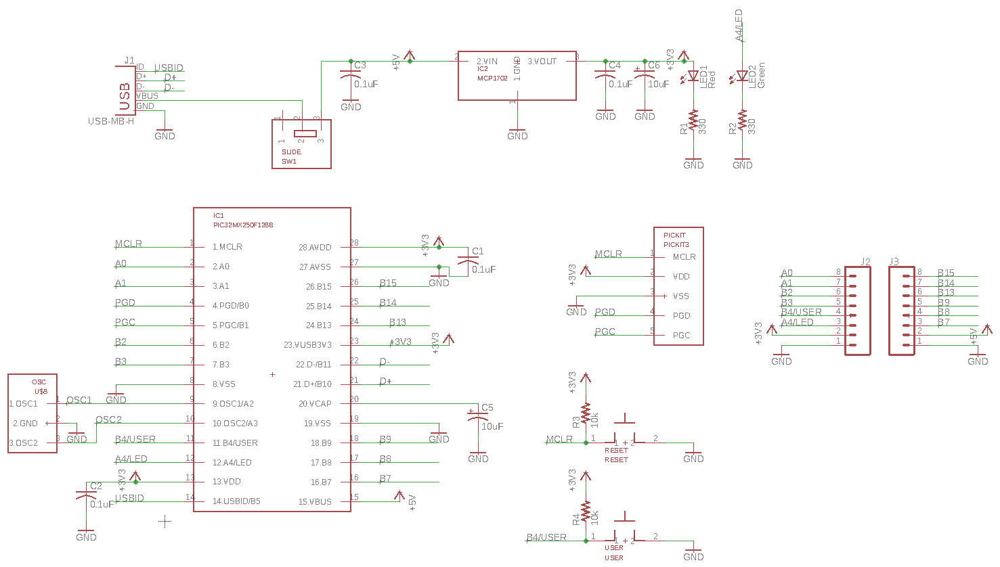

Technical Skills Used
Hardware & Layout
The mechanical layout of the line-following robot is shown to the right. The hardware used is listed below.
- Custom made PCB - includes:
- PIC32MX250F128B microcontroller
- 2 status LEDs (one power, one user-configurable)
- 2 push-buttons (one master reset, one user-configurable)
- Programming port for the PICkit3
- USB mini port
- Power switch
- Header pins for connecting to the motor shield
- Motor Control Shield
- Android phone (Moto G Black) running Kitkat
- 2 Chihai CHR-16G-050-ABHL 12V DC motors
- Custom CADed and lasercut wooden chassis
- 2 Custom CADed and 3D printed wheels
- Rear castor wheel
- 12V lithium-ion battery
- USB OTG adapter
- Nuts, Bolts, Wires, and Zipties
The chassis is made out of 3 lasercut components that are bolted together. One of the most challenging aspects of the physical design was ensuring that the phone was secure when the robot was running. Due to the curved bottom plate of the phone, the supporting wood was cut out such that it would be flush to the phone. Additionally, as can be seen in the picture on the right, the USB-OTG adapter was ziptied to the bottom of the chassis so that the phone would not slide backwards and would maintain a 45 degree angle from the ground. This way, the camera on the phone would have the optimum viewing angle to ensure effective image processing of the line.



How it Works
PCB Design
One of the core tools that the class learned about was to design PCBs using AutoDesk Eagle. For this project, we each could design our PCB however we saw fit as long as the header pins were lined up appropiately such that the motor shield could be attached on top. There were also size constraints in that the board could only be 50mmx50mm. In the design, there were 2 layers. The bottom layer was ground (blue in the third picture), except where there were traces. The top layer consisted of traces which are shown in red in the third picture. The final designs can be seen below in the order of top layer, bottom layer, and both combined. The boards were then printed by PCBWay, a third-party PCB manufacturer.
The Eagle schematic of the wiring can be seen below.

The actual PCB and the accompanying motor shield is shown below. All relevant hardware was soldered on by me.
Software Design
There were 2 main components of the software design:
- The line-finding Android application
- The program running on the PIC32 microncontroller
The Android app was developed in Android Studio, and essentially works as follows:
- A raw image from the camera stream is captured.
- Image Processing is done on 2 rows of pixels (seen as black lines in the gif on the right) in the top half of the frame. The idea is to find the center of mass of red pixels on each line and then to average the positions of each line to acheive a goal position input for the motor control algorithm running on the microncontroller.
- Processing includes finding the red pixels on each of those lines based on how red and bright each of those pixels are. These are set by some threshold that can be tweaked by bars on the app itself as can be seen on the right.
- Any pixel not considred red is changed to black so that only the red pixels remain. This is done because black has a low RGB value that will factor little into the COM calculations. It is also useful for user-feedback purposes.
- Assuming there is a significant amount of red on the line (which is determined by setting the sum threshold bar), the COM of the red mass is calculated and factered into the average COM of both lines.
- This average COM (which is just the column of the pixel at which the COM exists) can be seen on the App as a red dot on the second line. This position is the input into the control algorithm running on the microncontroller.

In order to connect the 2 programs, a USB OTG adapter was used so that the Android phone could become a USB host. This enabled the Android app to send values to the PIC32 microcontroller over USB CDC while the app was running. This was made possible by using MPLAB Harmony, which is a software framework for PIC32 projects.
The program on the PIC32 works as follows:
- First, an internal state machine is initialized.
- A socket is opened up to the Android phone via USB OTG
- The average COM data from the Android app is received by the microcontroller.
- A P-controller running at 50 Hz uses the COM input to create 2 reference inputs for the motors - one for the left motor and one for the right. This controller is used to try to steer the robot so that the red dot on the app is moved to the center of the screen. It should also be noted that the controller is set up such that there will always be some minimum forward velocity to keep the robot moving along.
- The reference input for each motor is stuck into a P-controller for each motor, though the code is technically set up to even implemnt PID controll should a user want to tune the integral and derivate gains.
- The resulting controller output from each controller is converted to PWM signals for each motor that are somewhere between 0-100% of the motor speed. The PWM frequency itself is set to 20 kHz.
Demo Video
A demo video of the robot navigating the rainbow road track (on the right) can be seen below. Note that the 2 ends of the road are connected by a bridge that is not shown.